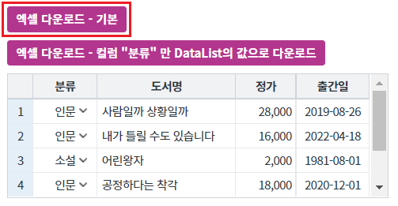
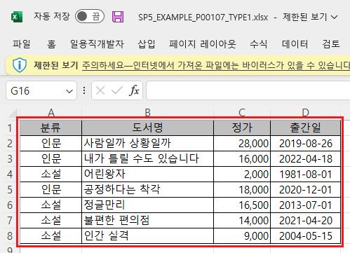
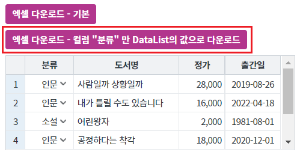
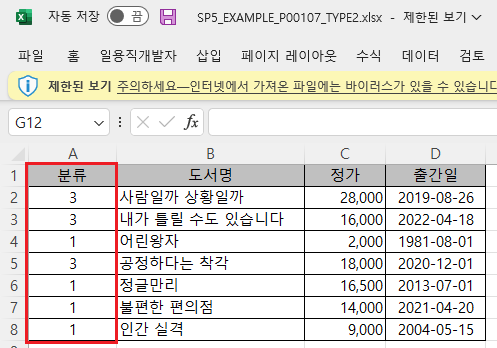
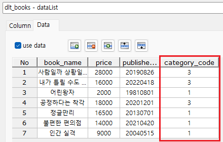
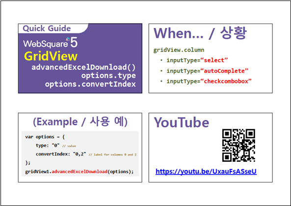

GridView의 엑셀 다운로드 옵션 중 "convertIndex" 설정의 예제입니다. 옵션 "convertIndex"은 지정한 index의 컬럼의 type을 기본 설정값과 반대의 설정으로 지정합니다. 옵션 "type"의 값이 "1"으로 지정되면 converIndex에 해당하는 컬럼은 type이 "0"인 값으로 할당됩니다.
엑셀 다운로드하기 - 기본 동작
엑셀 다운로드 - 컬럼 "분류" 만 DataList의 값으로 다운로드
[브라우저(Chrome) 실행 예시]

다운로드 된 엑셀 파일 "SP5_EXAMPLE_P00107_TYPE1.xlsx"을 실행합니다.
GridView에 출력된 데이터와 동일하게 엑셀에 출력됩니다.
[다운로드된 엑셀(2021) 파일 예시]

[브라우저(Chrome) 실행 예시]

다운로드 된 엑셀 파일 "SP5_EXAMPLE_P00107_TYPE2.xlsx"을 실행합니다.
컬럼 "분류"의 값만 DataList의 데이터와 동일하게 엑셀에 출력됩니다.
[다운로드된 엑셀(2021) 파일 예시]

[DataList의 Data 예시]

GridView와 연결된 DataList 생성 및 연결 방법은 생략되었습니다.
구현 방식은 엑셀 다운로드의 데이터 출처의 값을 지정하고, 지정한 기본 출처값와 반대로 지정할 컬럼의 index값을 지정하는 방식입니다.
원하는 시점에 엑셀 다운로드 스크립트를 작성합니다.
[소스 코드 예시]
//예제 파일의 스크립트 "scwin.btn_ex2_onclick"를 참고하세요. var jsnOptions; jsnOptions = { fileName : "SP5_EXAMPLE_P00107_TYPE2.xlsx", //엑셀의 파일명 convertIndex : "0" //0번째 컬럼만 DataList의 값으로 다운로드. type 옵션의 기본값은 1(GridView에 출력된 값)입니다. }; //convertIndex : [default: 없음] type이 "0" 또는 "1"인 경우, 특정 컬럼만 type이 "1" 또는 "0"인 데이터로 다운로드. type="1"인 상태에서 convertIndex="0,2"인 경우, index가 0,2인 컬럼은 컬름은 type="1"로 다운로드. //GridView "grd_exam1"의 엑셀 다운로드 실행 grd_exam1.advancedExcelDownload(jsnOptions);
options.type
options.convertIndex
[웹스퀘어5 SP5 개발 가이드] GridView
링크 : https://docs1.inswave.com/sp5_user_guide/86bdcf48029b958b
[웹스퀘어5 SP5 개발 가이드] GridView → Excel 다운로드
링크 : https://docs1.inswave.com/sp5_user_guide/bc10c1b82c9a2a0b
[웹스퀘어5 SP5 개발 가이드] GridViwe - 다운로드할 데이터 종류(value 혹은 label)를 컬럼 별로 명시
링크 : https://docs1.inswave.com/sp5_user_guide/bc10c1b82c9a2a0b#a9b1fce13574fd1a
GridViwe - 다운로드할 데이터 종류(value 혹은 label)를 컬럼 별로 명시
링크 : https://youtu.be/UxauFsASseU
